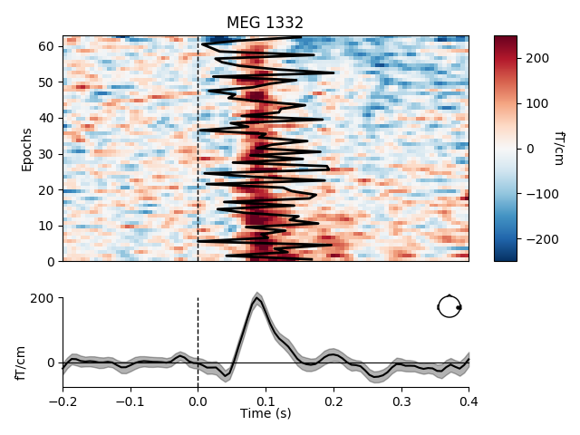
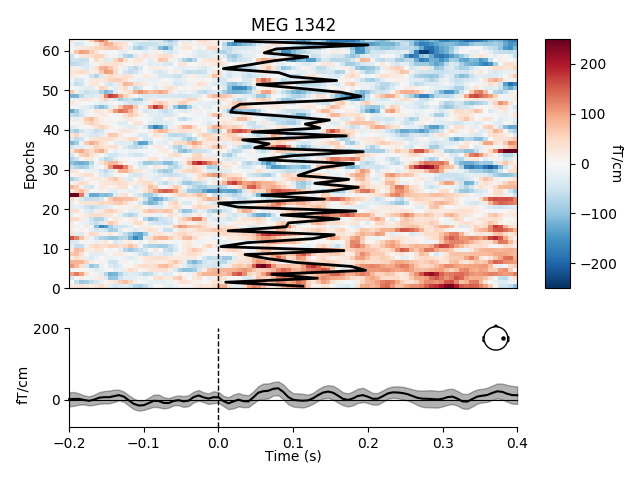

Note
Click here to download the full example code
Visualize channel over epochs as an image¶
This will produce what is sometimes called an event related potential / field (ERP/ERF) image.
Two images are produced, one with a good channel and one with a channel that does not show any evoked field.
It is also demonstrated how to reorder the epochs using a 1D spectral embedding as described in 1.
# Authors: Alexandre Gramfort <alexandre.gramfort@telecom-paristech.fr>
#
# License: BSD (3-clause)
import numpy as np
import matplotlib.pyplot as plt
import mne
from mne import io
from mne.datasets import sample
print(__doc__)
data_path = sample.data_path()
Set parameters
raw_fname = data_path + '/MEG/sample/sample_audvis_filt-0-40_raw.fif'
event_fname = data_path + '/MEG/sample/sample_audvis_filt-0-40_raw-eve.fif'
event_id, tmin, tmax = 1, -0.2, 0.4
# Setup for reading the raw data
raw = io.read_raw_fif(raw_fname)
events = mne.read_events(event_fname)
# Set up pick list: EEG + MEG - bad channels (modify to your needs)
raw.info['bads'] = ['MEG 2443', 'EEG 053']
# Create epochs, here for gradiometers + EOG only for simplicity
epochs = mne.Epochs(raw, events, event_id, tmin, tmax, proj=True,
picks=('grad', 'eog'), baseline=(None, 0), preload=True,
reject=dict(grad=4000e-13, eog=150e-6))
Out:
Opening raw data file /home/circleci/mne_data/MNE-sample-data/MEG/sample/sample_audvis_filt-0-40_raw.fif...
Read a total of 4 projection items:
PCA-v1 (1 x 102) idle
PCA-v2 (1 x 102) idle
PCA-v3 (1 x 102) idle
Average EEG reference (1 x 60) idle
Range : 6450 ... 48149 = 42.956 ... 320.665 secs
Ready.
Current compensation grade : 0
72 matching events found
Applying baseline correction (mode: mean)
Not setting metadata
4 projection items activated
Loading data for 72 events and 91 original time points ...
Rejecting epoch based on EOG : ['EOG 061']
Rejecting epoch based on EOG : ['EOG 061']
Rejecting epoch based on EOG : ['EOG 061']
Rejecting epoch based on EOG : ['EOG 061']
Rejecting epoch based on EOG : ['EOG 061']
Rejecting epoch based on EOG : ['EOG 061']
Rejecting epoch based on EOG : ['EOG 061']
Rejecting epoch based on EOG : ['EOG 061']
Rejecting epoch based on EOG : ['EOG 061']
9 bad epochs dropped
Show event-related fields images
# and order with spectral reordering
# If you don't have scikit-learn installed set order_func to None
from sklearn.cluster.spectral import spectral_embedding # noqa
from sklearn.metrics.pairwise import rbf_kernel # noqa
def order_func(times, data):
this_data = data[:, (times > 0.0) & (times < 0.350)]
this_data /= np.sqrt(np.sum(this_data ** 2, axis=1))[:, np.newaxis]
return np.argsort(spectral_embedding(rbf_kernel(this_data, gamma=1.),
n_components=1, random_state=0).ravel())
good_pick = 97 # channel with a clear evoked response
bad_pick = 98 # channel with no evoked response
# We'll also plot a sample time onset for each trial
plt_times = np.linspace(0, .2, len(epochs))
plt.close('all')
mne.viz.plot_epochs_image(epochs, [good_pick, bad_pick], sigma=.5,
order=order_func, vmin=-250, vmax=250,
overlay_times=plt_times, show=True)
- 
- 
References¶
- 1
Graph-based variability estimation in single-trial event-related neural responses. A. Gramfort, R. Keriven, M. Clerc, 2010, Biomedical Engineering, IEEE Trans. on, vol. 57 (5), 1051-1061 https://ieeexplore.ieee.org/document/5406156
Total running time of the script: ( 0 minutes 2.710 seconds)
Estimated memory usage: 47 MB